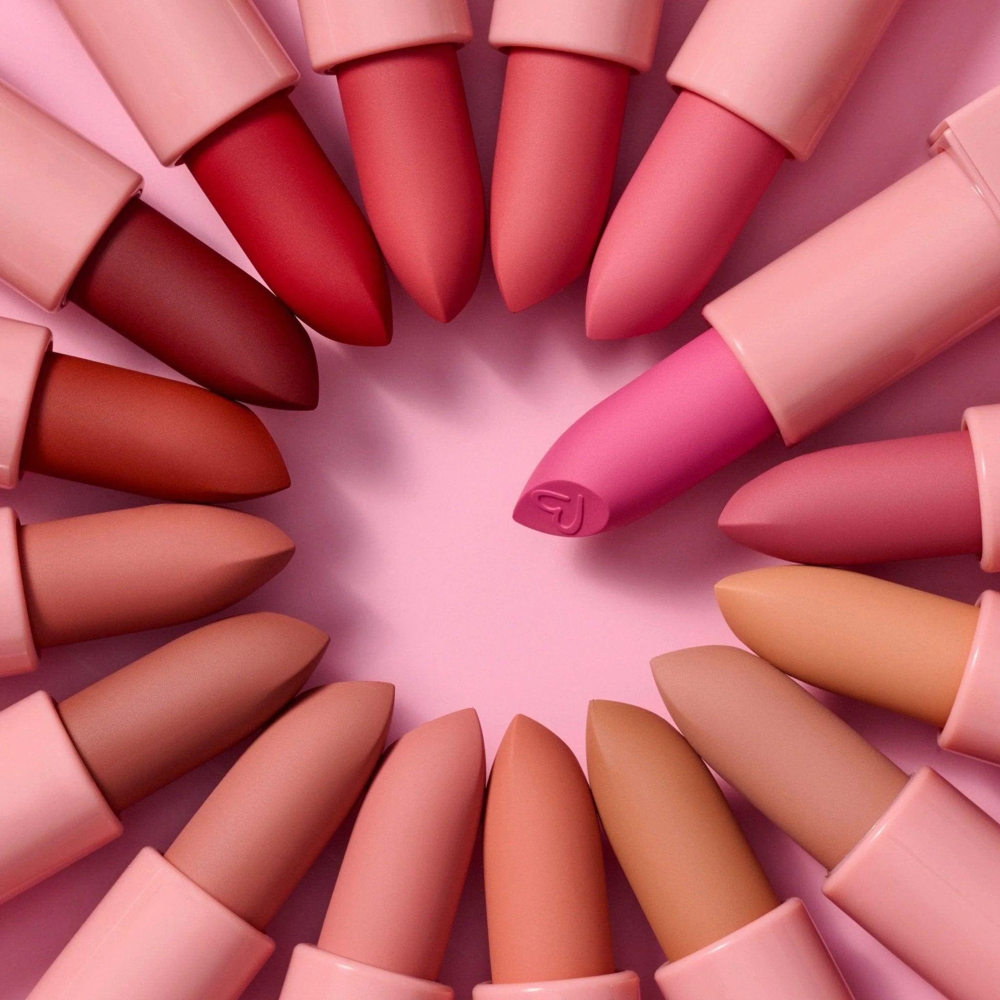
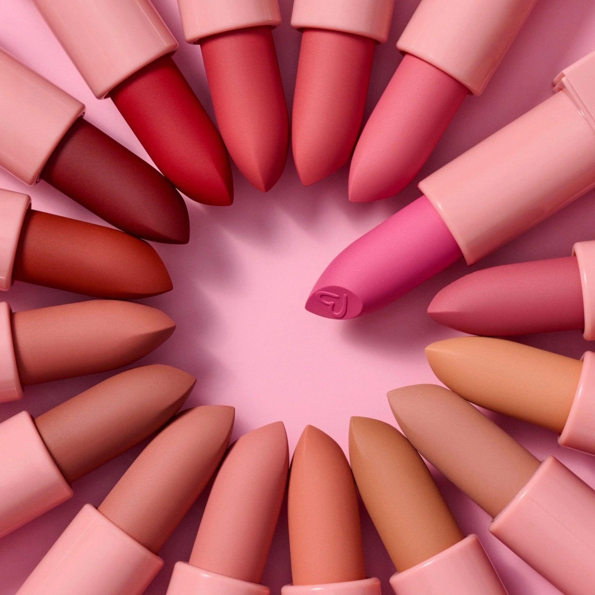
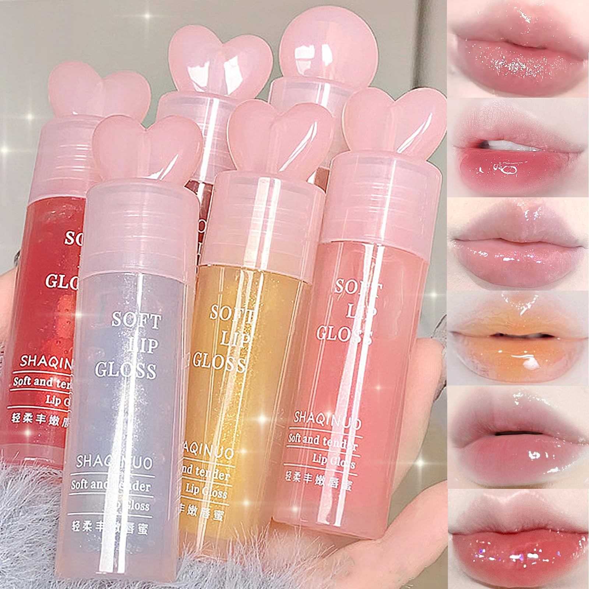
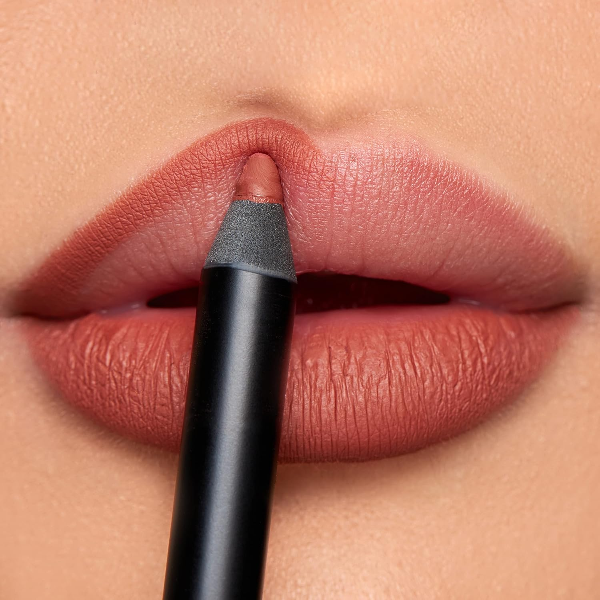
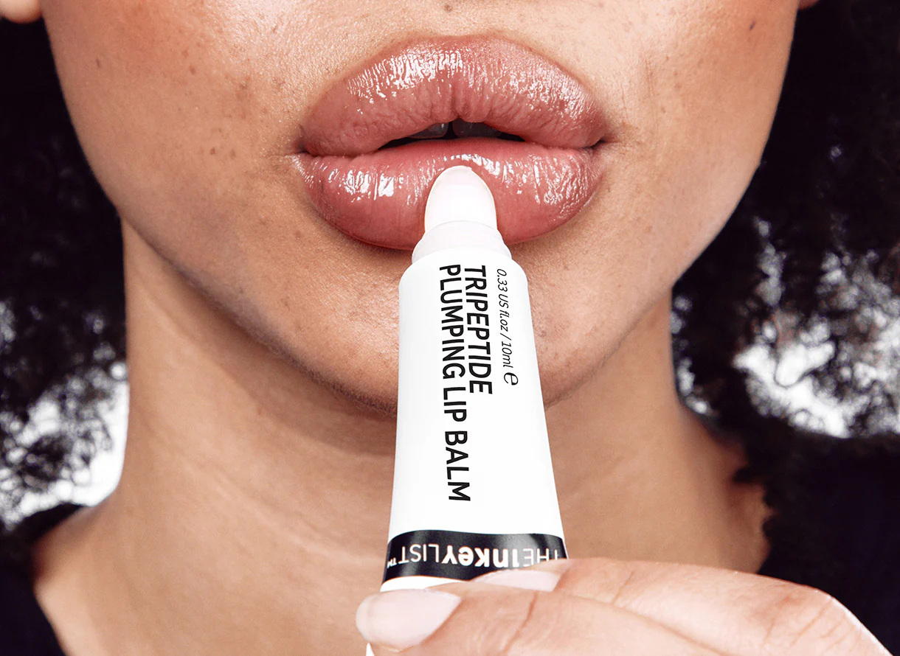
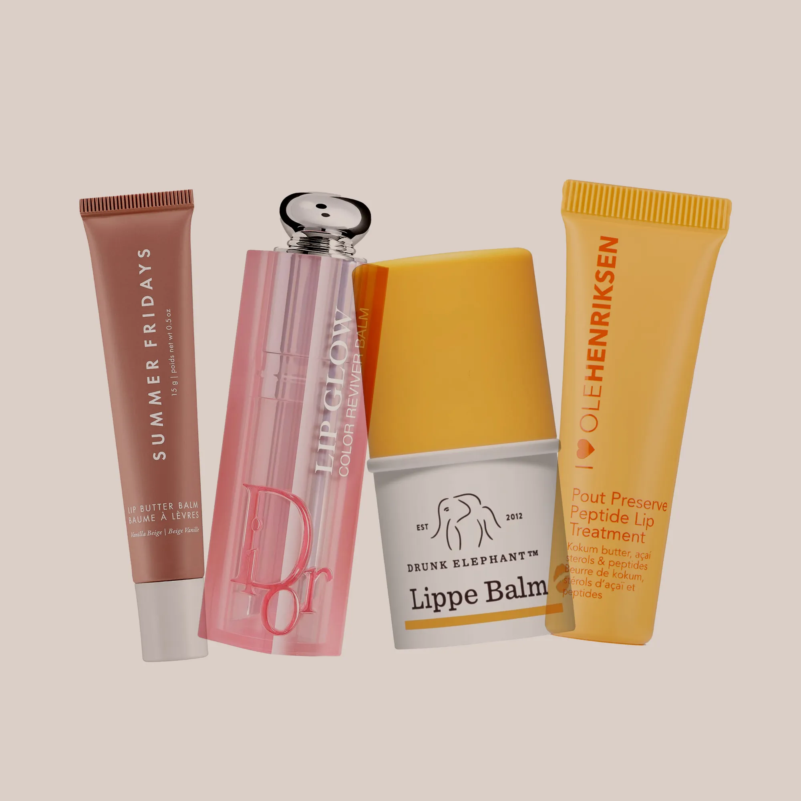
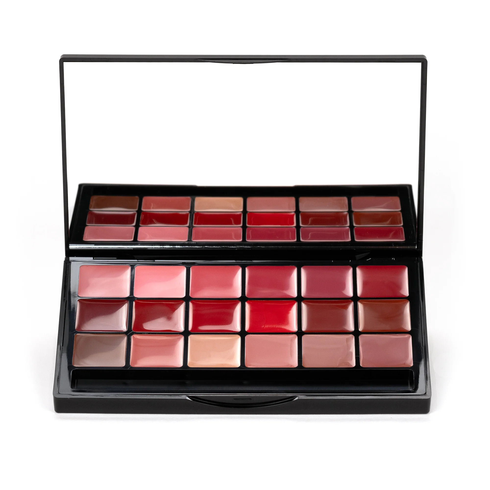
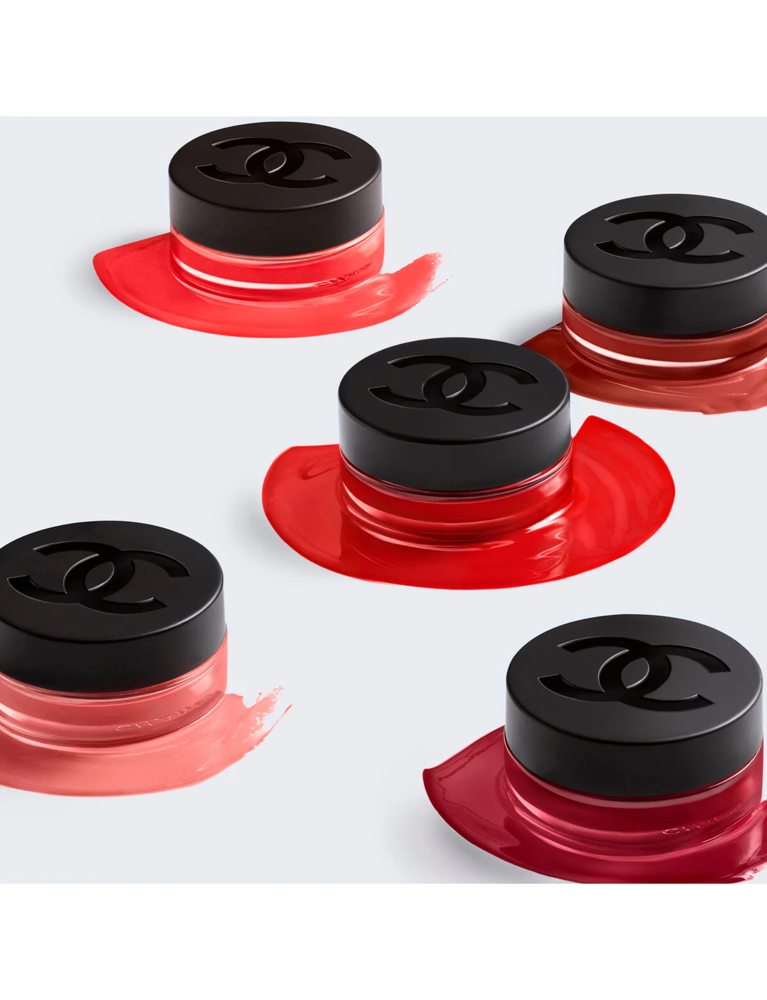

Lipstick
Lipsticks come in various finishes, from matte to glossy, offering vibrant colors for every occasion.
Lipsticks come in various finishes, from matte to glossy, offering vibrant colors for every occasion.
Lip glosses add shine and dimension to your lips, perfect for a natural or glamorous look.
Lip liners define and shape your lips, enhancing the longevity of your lipstick or gloss.
Lip plumpers enhance the fullness of your lips, giving them a plump, hydrated appearance.
Lip balms and treatments nourish and hydrate your lips, keeping them soft and smooth.
Lip palettes feature a variety of shades and finishes, perfect for versatile and creative lip looks.
Discover unique lip products, from exfoliating scrubs to specialty items for your lip care needs.
